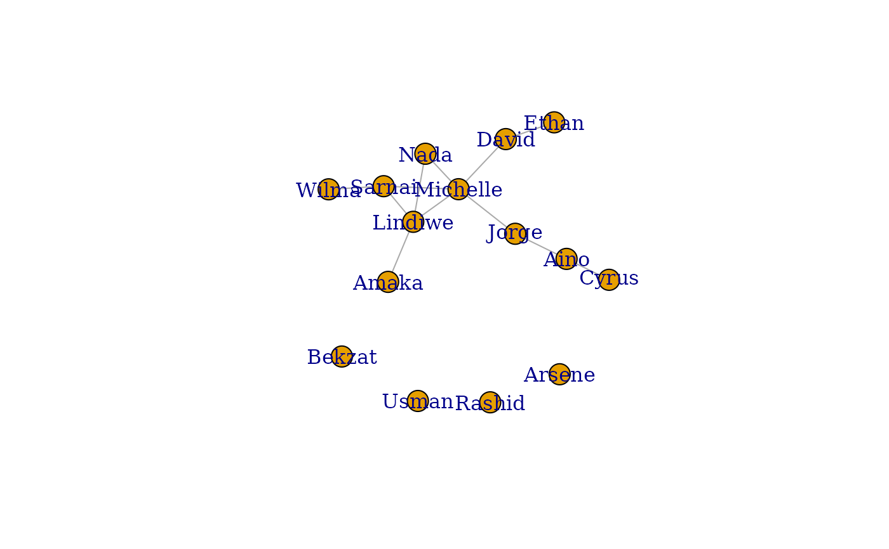

Generate an igraph network object using common graph algorithms with realistic node names from human names or learning states.
Usage
simulate_igraph(
n = NULL,
model = c("er", "ba", "ws", "sbm", "reg", "grg", "ff"),
name_source = c("human", "states"),
regions = "all",
categories = "all",
names = NULL,
directed = FALSE,
weighted = FALSE,
weights = c(0.1, 1),
p = 0.1,
m = NULL,
power = 1,
m_ba = 2,
nei = 2,
p_rewire = 0.05,
blocks = 3,
p_within = 0.3,
p_between = 0.05,
k = 4,
radius = 0.25,
fw = 0.35,
bw = 0.32,
seed = NULL
)Arguments
- n
Integer or NULL. Number of nodes. If NULL (default), randomly selects between 20-50 nodes.
- model
Character. Graph generation algorithm:
"er": Erdos-Renyi random graph"ba": Barabasi-Albert scale-free network"ws": Watts-Strogatz small-world network"sbm": Stochastic Block Model (community structure)"reg": Regular graph (fixed degree)"grg": Geometric Random Graph (spatial)"ff": Forest Fire (growing network)
Default: "er".
- name_source
Character. Source for node names:
"human": Culturally diverse human names from GLOBAL_NAMES"states": Learning action verbs from LEARNING_STATES
Default: "human".
- regions
Character vector. Regions to sample human names from (only used when name_source = "human"). Can be specific regions (e.g., "arab", "east_asia"), shortcuts (e.g., "europe", "africa", "asia"), or "all". See
list_name_regions. Default: "all".- categories
Character vector. Learning state categories (only used when name_source = "states"). Options: "metacognitive", "cognitive", "behavioral", "social", "motivational", "affective", "group_regulation", "lms", or "all". Default: "all".
- names
Character vector or NULL. Custom node names. Overrides name_source if provided. Default: NULL.
- directed
Logical. If TRUE, generate directed network. Default: FALSE.
- weighted
Logical. If TRUE, add random edge weights. Default: FALSE.
- weights
Numeric vector of length 2. Weight range [min, max]. Default: c(0.1, 1.0).
- p
Numeric. Edge probability for Erdos-Renyi model. Default: 0.1.
- m
Integer or NULL. Fixed number of edges for Erdos-Renyi. Overrides p if provided. Default: NULL.
- power
Numeric. Attachment power for Barabasi-Albert. Default: 1.
- m_ba
Integer. Edges per new vertex for Barabasi-Albert. Default: 2.
- nei
Integer. Neighborhood size for Watts-Strogatz. Default: 2.
- p_rewire
Numeric. Rewiring probability for Watts-Strogatz. Default: 0.05.
- blocks
Integer. Number of blocks for SBM. Default: 3.
- p_within
Numeric. Within-block edge probability for SBM. Default: 0.3.
- p_between
Numeric. Between-block edge probability for SBM. Default: 0.05.
- k
Integer. Degree for regular graphs. Default: 4.
- radius
Numeric. Connection radius for geometric random graph. Default: 0.25.
- fw
Numeric. Forward burning probability for Forest Fire. Default: 0.35.
- bw
Numeric. Backward burning factor for Forest Fire. Default: 0.32.
- seed
Integer or NULL. Random seed for reproducibility. Default: NULL.
Details
This function wraps igraph's graph generation algorithms and adds:
Meaningful node names (human names or learning states)
Optional edge weights
Block/community attributes for SBM
The generated networks are suitable for social network analysis, teaching network concepts, or testing TNA methods.
See also
simulate_network for statnet network objects,
simulate_matrix for adjacency matrices,
simulate_tna_network for fitted TNA models.
Examples
library(igraph)
#>
#> Attaching package: ‘igraph’
#> The following objects are masked from ‘package:stats’:
#>
#> decompose, spectrum
#> The following object is masked from ‘package:base’:
#>
#> union
# Default: Erdos-Renyi with human names from all regions
g <- simulate_igraph(n = 15, seed = 42)
V(g)$name # Diverse names like "Yuki", "Omar", "Priya"
#> [1] "Nada" "Bekzat" "Cyrus" "Lindiwe" "Michelle" "Jorge"
#> [7] "Wilma" "Aino" "Usman" "Ethan" "Amaka" "Arsene"
#> [13] "David" "Sarnai" "Rashid"
plot(g)

# Names from specific regions
g_arab <- simulate_igraph(n = 15, regions = "arab", seed = 42)
V(g_arab)$name # Arab names
#> [1] "Amr" "Faisal" "Salma" "Dalal" "Noor" "Heba" "Layla" "Hana"
#> [9] "Amira" "Khaled" "Dina" "Yusuf" "Rami" "Mona" "Rana"
g_africa <- simulate_igraph(n = 20, regions = "africa", seed = 42)
V(g_africa)$name # African names from all sub-regions
#> [1] "Kofi" "Houda" "Solomon" "Claudine" "Fartun" "Nadege"
#> [7] "Ochieng" "Ropafadzo" "Adhiambo" "Salwa" "Ikenna" "Andre"
#> [13] "Kwame" "Fiston" "Adaobi" "Tesfaye" "Ruth" "Mwangi"
#> [19] "Simone" "Kagame"
# Use learning state names instead
g_states <- simulate_igraph(n = 10, name_source = "states", seed = 42)
V(g_states)$name # Action verbs like "Plan", "Monitor", "Evaluate"
#> [1] "Evaluate" "Consult" "Anxious" "Regulate" "Respond"
#> [6] "Integrate" "Apply" "Note" "Doubt" "Brainstorm"
# Scale-free network (Barabasi-Albert)
g_sf <- simulate_igraph(n = 50, model = "ba", m_ba = 2, seed = 42)
degree_distribution(g_sf)
#> [1] 0.00 0.00 0.52 0.12 0.10 0.10 0.02 0.02 0.02 0.00 0.00 0.06 0.02 0.02
# Small-world network (Watts-Strogatz)
g_sw <- simulate_igraph(n = 30, model = "ws", nei = 4, p_rewire = 0.1, seed = 42)
# Community structure (Stochastic Block Model)
g_sbm <- simulate_igraph(n = 30, model = "sbm", blocks = 3,
p_within = 0.5, p_between = 0.05, seed = 42)
V(g_sbm)$block # Community assignments
#> [1] 1 1 1 1 1 1 1 1 1 1 2 2 2 2 2 2 2 2 2 2 3 3 3 3 3 3 3 3 3 3
# Weighted network with custom names
g_custom <- simulate_igraph(
n = 10,
model = "er",
weighted = TRUE,
names = c("Alice", "Bob", "Carol", "Dave", "Eve",
"Frank", "Grace", "Heidi", "Ivan", "Judy"),
seed = 42
)
E(g_custom)$weight
#> [1] 0.1741938 0.5627906 0.4511831 0.9151643 0.5022727 0.8524038